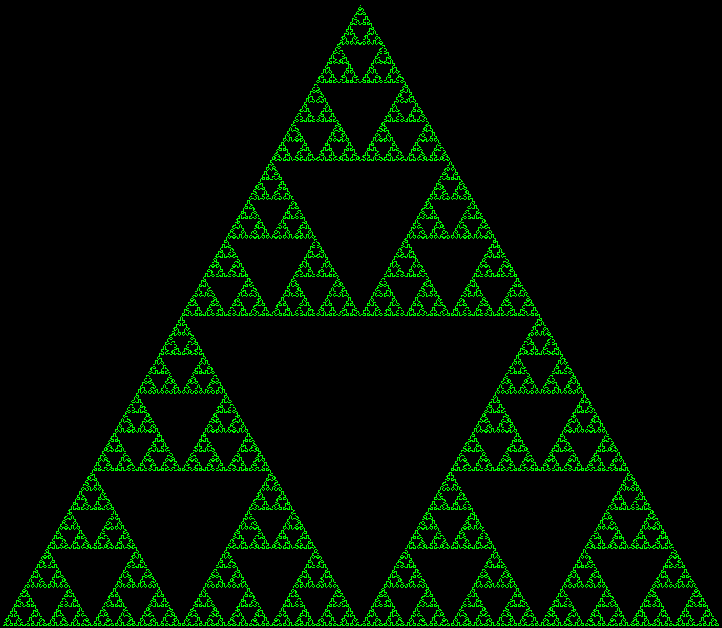
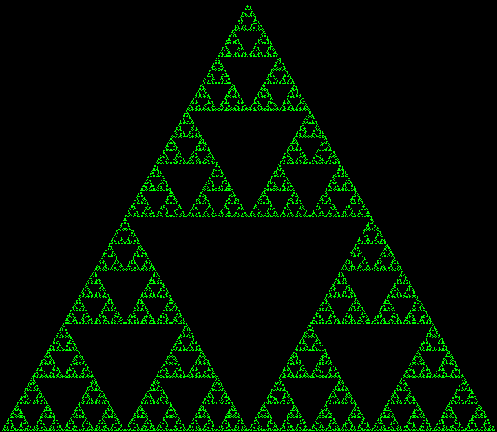

Lesson 7
Today we will:
learn about turtle graphics
review loops
learn more about functions
Turtle Graphics
Similar to the Pen Tools extension in Scratch.
Useful for:
drawing polylines
making patterns/art
 

{kind=link}
Turtle Graphics in pycat
In pycat, the turtle is a special kind of sprite that can draw line segments as it moves.
Turtle Creation
from pycat.extensions.turtle import Turtle
t = w.create_sprite(Turtle)
Turtle Methods
turtle.turn_left(degrees: float)turtle.turn_right(degrees: float)turtle.pen_up()turtle.pen_down()
Turtle Properties
turtle.pen_colorturtle.pen_width
Exercise
Write a program that creates a Turtle and draws a simple shape.
find an image to use for your turtle (make sure it faces right)
experiment with the turtle methods and properties listed above
For Loops
for i in range(4):
print(i)
What will this draw?
for _ in range(4):
t.move_forward(10)
t.rotation += 90
for _ in range(4):
t.pen_down()
t.move_forward(5)
t.pen_up()
t.move_forward(5)
=======
Lesson 7
So far we seen types of variables that store a single value
[ ]:
x = 4
y = 3.14
z = False
Strings are kind of an exception, they are a collection of characters.
[ ]:
y = 'strings'
print('the first character is:', y[0])
print('the length of characters in y is:', y[0])
len(y)
List Initialization
[ ]:
empty_list = []
print(empty_list)
[ ]:
my_int_list = [4, 8, 7, -7, 6]
print(my_int_list)
print(my_int_list[0])
print(my_int_list[1])
[ ]:
my_bool_list = [True, False, True]
print(my_bool_list)
print(my_bool_list[0])
print(my_bool_list[1])
The append() method
[ ]:
starting_list = []
starting_list.append(1)
print(starting_list)
starting_list.append(2)
print(starting_list)
[ ]:
colors = []
for i in range(3):
color = input("what is your favorite color")
colors.append(color)
print(colors)
List Indexing and Iteration
[ ]:
names = ['Charles', 'Ivan', 'Hank', 'Feng-Jun']
print('Hello',names[0])
print('Hello',names[1])
print('Hello',names[2])
print('Hello',names[3])
[ ]:
names = ['Charles', 'Ivan', 'Hank', 'Feng-Jun']
for i in range(4):
print('Hello', names[i])
The len() function
[ ]:
names = ['Charles', 'Ivan', 'Hank', 'Feng-Jun', 'Chris']
for i in range(len(names)):
print('Hello', names[i])
[ ]:
names = ['Charles', 'Ivan', 'Hank', 'Feng-Jun', 'Chris', 'Sebastian']
for i in range(len(names)):
print('Hello', names[len(names)-i-1])
[ ]:
names = ['Charles', 'Ivan', 'Hank', 'Feng-Jun', 'Chris', 'Sebastian']
for i in range(len(names)):
print('Hello', names[-i-1])
[ ]:
for i in range(1,100,2):
print(i,end=',')
>>>>>>> 24fbca317d6d60209003e96cd4662b109c5b652e
Exercise
Draw some shapes using for loops. Possible shapes include:
Square
Regular Polygon
Circle
Star
Spiral
After you finish a few different shapes, try to make them using dotted lines.
<<<<<<< HEAD
Functions
Let’s make a function to draw a square together:
def draw_square():
pass
Exercise
Create functions for the shapes you made in the previous exercise
Function Arguments
Part 1
How can we make our functions more generic/useful?
def draw_square(size: float):
pass
=======
Conditionals in a for loop
[ ]:
names = ['Charles', 'Ivan', 'Hank', 'Feng-Jun', 'Chris', 'Sebastian']
for i in range(len(names)):
if names[i] == 'Chris':
print(names[i],'went to study Scratch')
else:
print(names[i], 'is studying in Python')
The for n in some_list: loop
[ ]:
names = ['Charles', 'Ivan', 'Hank', 'Feng-Jun', 'Chris', 'Sebastian']
for n in names:
if n == 'Chris':
print(n,'went to study Scratch')
else:
print(n, 'is studying in Python')
[ ]:
>>>>>>> 24fbca317d6d60209003e96cd4662b109c5b652e
Exercise
Rewrite your functions to be more generic
<<<<<<< HEAD
Part 2
What if we have multiple turtles in our file?
Exercise
Rewrite your functions to be generic
Extensions
Regular Polygon
def draw_regular_polygon(sides: int, side_length: float):
pass
def draw_regular_polygon(sides: int, side_length: float, is_dashed: bool):
pass
User-controlled Turtle
class InteractiveTurtle(Turtle):
def on_update(dt):
if w.get_key(KeyCode.W):
pass
Homework
=======
>>>>>>> 24fbca317d6d60209003e96cd4662b109c5b652e